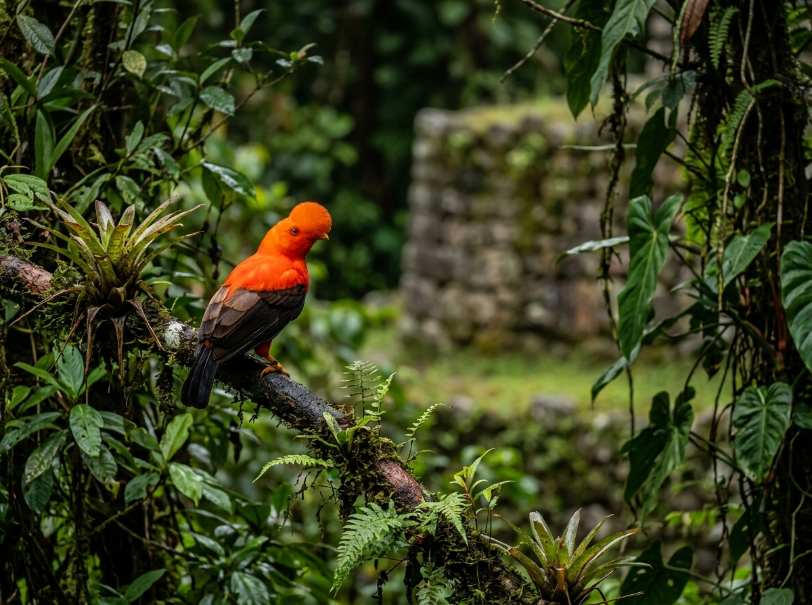
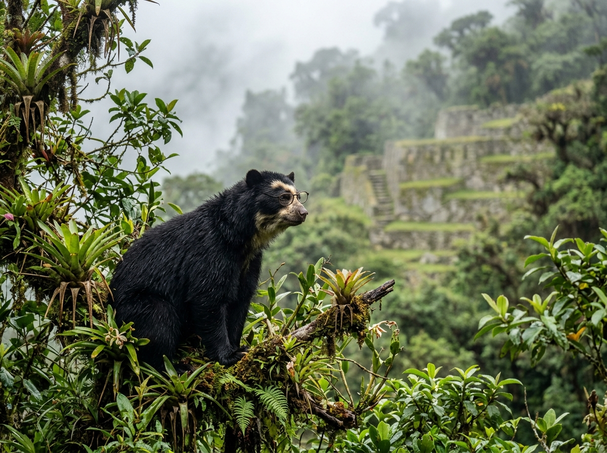

Generando iniciativas para la gestión de nuestro patrimonio natural.
Este congreso es un encuentro académico de alto nivel diseñado para debatir, analizar y crear soluciones. A través de ponencias de expertos y mesas de trabajo, buscamos que nazcan iniciativas reales de cambio en los lineamientos para la gestión de áreas de conservación regional en el Perú.
Investigaciones y estudios de caso sobre biodiversidad.
Debates enfocados en políticas y gestión ambiental.
Celebrando la rica herencia y cultura del Cusco.

Protegiendo a nuestros guardianes andinos y amazónicos.

El único oso de Sudamérica, vital para los bosques nublados.
Actividades, ponencias y mesas de trabajo
Recepción y abordaje para traslado al ACR Tres Cañones.
Salida oficial hacia el ámbito del ACR.
Recepción institucional y LUNCH.
Acto protocolar en Mirador Tres Cañones.
Interpretación territorial sobre conservación y biodiversidad.
Exhibición de emprendimientos, productos locales y gastronomía.
Ingreso principal / Sala Ollantaytambo.
Acto protocolar y palabras de autoridades (GORE Cusco, SERNANP, MINAM, etc.).
Estado situacional y desafíos pendientes (Red Cajamarca).
Identificar desafíos nacionales y definir prioridades institucionales.
Retos y propuestas para su mejora e implementación (SERNANP).
Experiencia del GORE Loreto.
¿Qué ajustes normativos e institucionales requiere el sistema nacional de ACR?
MINAM - Dirección General de Diversidad Biológica.
Tala ilegal y deforestación (ACR Bosques Húmedos), Minería ilegal (ACR Carpish), Tecnologías de monitoreo (ACR Chuyapi Urusayhua).
¿Cómo fortalecer la vigilancia, control y respuesta ante amenazas?
GORE Cusco – San Diego Zoo Wildlife Alliance.
Presentaciones artísticas inspiradas en danzas de Paucartambo.
Experiencia de Tacna.
¿Cómo fortalecer la gobernanza territorial para consolidar las ACR?
Cooperación internacional (KFW).
Mecanismos innovadores para fortalecer la sostenibilidad financiera.
Oportunidades para fortalecer las ACR (Re:wild, ACCA, PROFONANPE, etc.).
UNEP.
¿Cómo fortalecer la bioeconomía y el acceso a mercados?
Construcción de acuerdos nacionales.
Presentación, consolidación y validación de acuerdos.
Participación social e inclusión.
Restauración de ecosistemas degradados con especies nativas.
Investigación, monitoreo e innovación para la gestión adaptativa.
Presidencia de la Red Nacional de ACR al GORE Cusco.
Suscripción final de la declaración.
Sede del IV Congreso Nacional de ACR (2027).
Vicegobernadora Regional de Cusco.
Aquí se publicarán próximamente las diapositivas y resúmenes de las presentaciones académicas.
* Todos los materiales estarán disponibles para su descarga una vez finalizado cada bloque del Congreso.